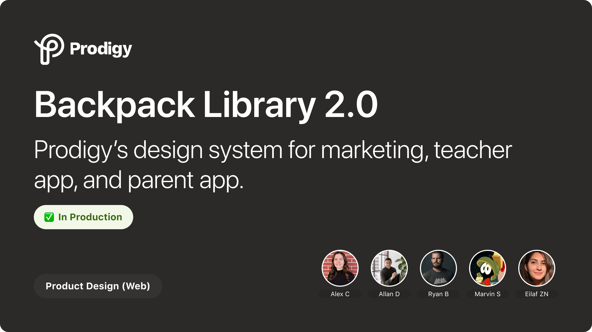

Leading the reimagining of Prodigy's foundational design system to improve consistency, accelerate development, and scale across a growing product suite.

Prodigy Education is an EdTech company whose game-based learning platform reaches millions of students worldwide. As the product evolved and the team grew, the existing design system, Backpack, had become fragmented. Components were inconsistent across platforms, documentation was outdated, and designers and engineers were frequently rebuilding the same patterns from scratch.
When I joined the team, lack of buy in from senior stakeholders had completely stalled the redesign project. Alongside one brave Developer, I took on the role of leading and championing the redesign, shipping components strategically and transforming the system from a loose collection of broken components into a cohesive, well-documented system that could scale with the product and the team.
The redesign project faced a few fundamental challenges...
Feature work consistently won out over infrastructure investment, and previous efforts to prioritize the redesign had stalled.
Without dedicated resources or executive sponsorship, the project had no path forward.
Components had diverged across web and mobile, with no single source of truth for design patterns.
Teams were creating one-off variations instead of reusing shared components and we had no reliable onboarding resource for design.
Without a reliable system, design and development cycles were slower than they needed to be.
Designers and Developers wasted valuable time digging for components and repeating the same work over and over again.
Before redesigning anything, I needed to understand what we were working with. I conducted a thorough audit of the existing Backpack system, cataloging every component across Figma libraries, the codebase, and the live product.
This audit revealed the full scope of inconsistency — duplicate components with different behaviors, color tokens that didn't match across platforms, and spacing values that varied between design and code. It gave us a clear picture of where the gaps were and helped prioritize what to tackle first.
Design system audit findings
With audit findings in hand, I focused on establishing strong foundations before tackling individual components. This meant reworking the core design tokens — color, typography, spacing, and elevation — to create a consistent visual language that worked across web and mobile.
I worked closely with engineering to ensure tokens were structured in a way that mapped cleanly to code variables, reducing the translation gap between design files and implementation.
By establishing a shared token architecture between design and code, we eliminated ambiguity and ensured that what designers built in Figma matched what engineers shipped in production.
Design token architecture and color system
With the foundations in place, I moved on to redesigning the component library. Each component was evaluated against real product use cases to ensure it met the needs of the teams building features day to day.
I introduced a tiered component structure — primitives, composites, and patterns — that gave teams building blocks at different levels of abstraction. Primitives like buttons and inputs could be composed into more complex components like form groups, which in turn formed recognizable patterns like search bars and data tables.
Component architecture — primitives, composites, and patterns
A design system only works if people actually use it. From the start, I embedded collaboration into the process. I ran regular design critiques where product designers could pressure-test new components against their feature work, and held pairing sessions with engineers to validate that components were practical to implement.
I also established a contribution model so the system wasn't bottlenecked by a single team. Clear guidelines for proposing new components, requesting changes, and documenting decisions meant Backpack could evolve with the product rather than falling behind it.
Weekly sessions where designers and engineers reviewed proposed components against real feature requirements, catching gaps early.
Regular pairing sessions to align on implementation details, prop structures, and accessibility requirements before build.
A documented process for anyone on the team to propose additions or changes to Backpack, keeping the system alive and evolving.
One of the biggest issues with the old Backpack was that knowledge lived in people's heads rather than in the system. I prioritized documentation as a first-class deliverable — not an afterthought.
Every component shipped with usage guidelines, dos and don'ts, accessibility notes, and live examples. I structured the documentation so that both designers and engineers could find what they needed without asking someone.
Component documentation with usage guidelines and examples
The redesigned Backpack system has already made a measurable impact on how the team works and what we ship.
Reduced design-to-dev handoff friction by establishing shared tokens and component specs that both designers and engineers reference
Improved cross-platform consistency with a unified component library serving both web and mobile product surfaces
Increased system adoption across product teams through better documentation, contribution guidelines, and onboarding resources